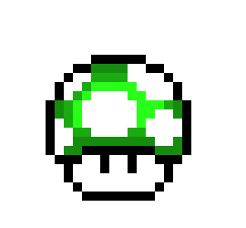

Manoel

Olá, me chamo Manoel Vitor da Silva, tenho 27 anos, desde pequeno me interesso por tecnologia, fiz varios cursos na área de T.I. e eletrônica, já atuei como técnico em informática, no momento estou querendo migrar da área de hardware para área de desenvolvimento de software, por isso escolhi cursar Sistemas para Internet da Fatec.